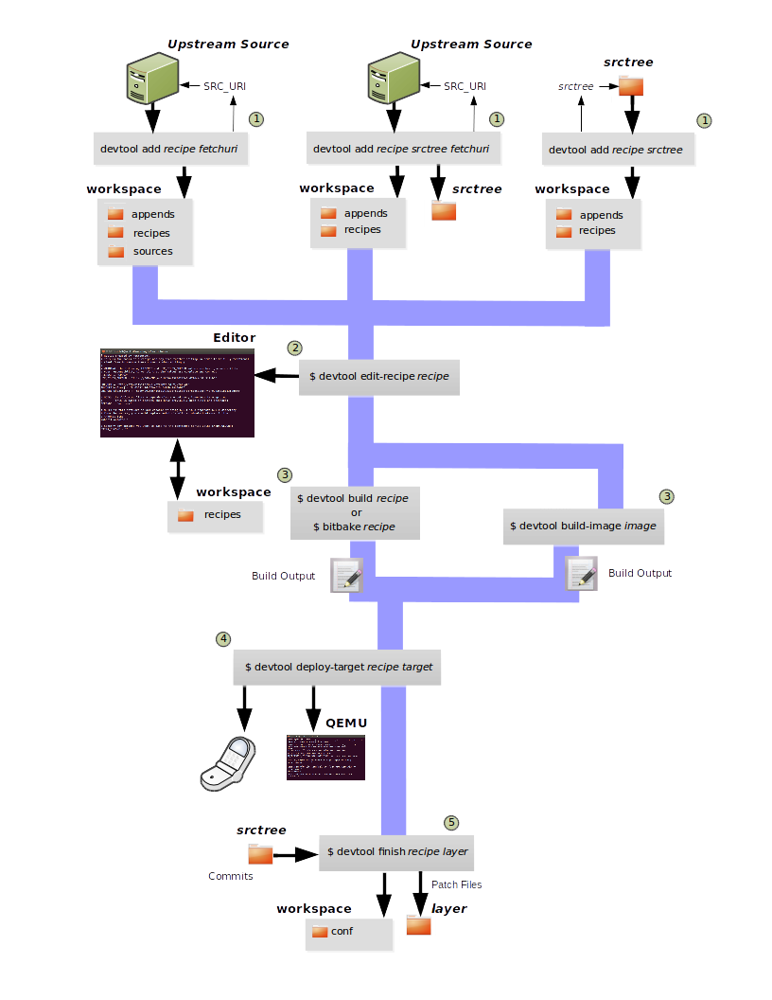
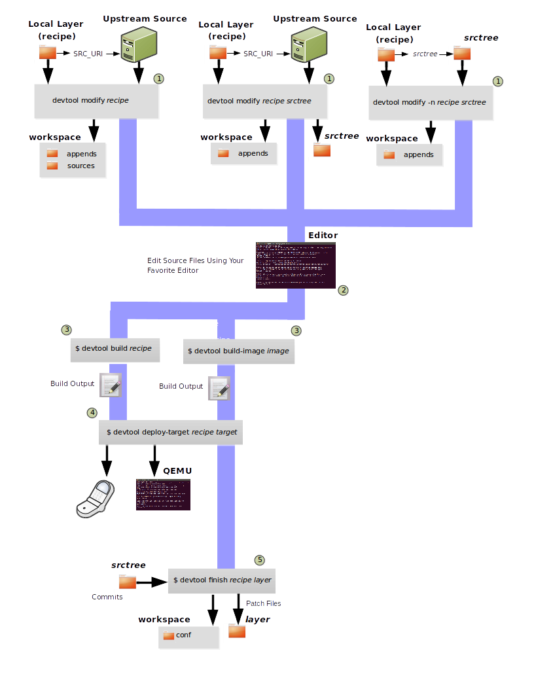
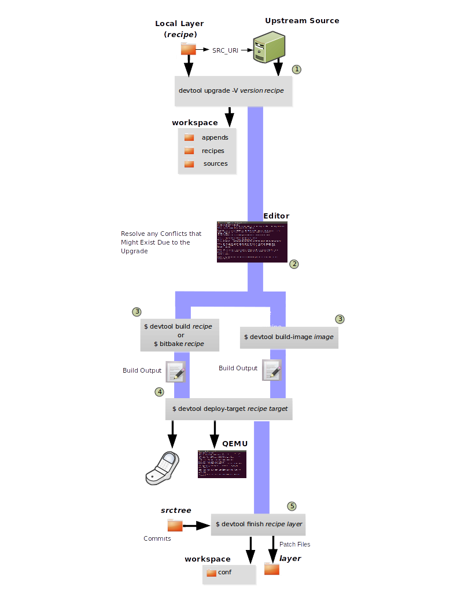

20 Using the devtool command-line tool
The devtool command-line tool provides a number of features that
help you build, test, and package software. This command is available
alongside the bitbake command. Additionally, the devtool command
is a key part of the Extensible Software Development Kit (eSDK).
20.1 Use devtool add to Add an Application
The devtool add command generates a new recipe based on existing
source code. This command takes advantage of the
The Workspace Layer Structure
layer that many devtool commands use. The command is flexible enough
to allow you to extract source code into both the workspace or a
separate local Git repository and to use existing code that does not
need to be extracted.
Depending on your particular scenario, the arguments and options you use
with devtool add form different combinations. The following diagram
shows common development flows you would use with the devtool add
command:


Generating the New Recipe: The top part of the flow shows three scenarios by which you could use
devtool addto generate a recipe based on existing source code.In a shared development environment, it is typical for other developers to be responsible for various areas of source code. As a developer, you are probably interested in using that source code as part of your development within the Yocto Project. All you need is access to the code, a recipe, and a controlled area in which to do your work.
Within the diagram, three possible scenarios feed into the
devtool addworkflow:Left: The left scenario in the figure represents a common situation where the source code does not exist locally and needs to be extracted. In this situation, the source code is extracted to the default workspace --- you do not want the files in some specific location outside of the workspace. Thus, everything you need will be located in the workspace:
$ devtool add recipe fetchuri
With this command,
devtoolextracts the upstream source files into a local Git repository within thesourcesfolder. The command then creates a recipe named recipe and a corresponding append file in the workspace. If you do not provide recipe, the command makes an attempt to determine the recipe name.Middle: The middle scenario in the figure also represents a situation where the source code does not exist locally. In this case, the code is again upstream and needs to be extracted to some local area --- this time outside of the default workspace.
Nota
If required,
devtoolalways creates a Git repository locally during the extraction.Furthermore, the first positional argument
srctreein this case identifies where thedevtool addcommand will locate the extracted code outside of the workspace. You need to specify an empty directory:$ devtool add recipe srctree fetchuri
In summary, the source code is pulled from fetchuri and extracted into the location defined by
srctreeas a local Git repository.Within workspace,
devtoolcreates a recipe named recipe along with an associated append file.Right: The right scenario in the figure represents a situation where the
srctreehas been previously prepared outside of thedevtoolworkspace.The following command provides a new recipe name and identifies the existing source tree location:
$ devtool add recipe srctree
The command examines the source code and creates a recipe named recipe for the code and places the recipe into the workspace.
Because the extracted source code already exists,
devtooldoes not try to relocate the source code into the workspace --- only the new recipe is placed in the workspace.Aside from a recipe folder, the command also creates an associated append folder and places an initial
*.bbappendfile within.
Edit the Recipe: You can use
devtool edit-recipeto open up the editor as defined by the$EDITORenvironment variable and modify the file:$ devtool edit-recipe recipe
From within the editor, you can make modifications to the recipe that take effect when you build it later.
Build the Recipe or Rebuild the Image: The next step you take depends on what you are going to do with the new code.
If you need to eventually move the build output to the target hardware, use the following
devtoolcommand:$ devtool build recipe
On the other hand, if you want an image to contain the recipe's packages from the workspace for immediate deployment onto a device (e.g. for testing purposes), you can use the
devtool build-imagecommand:$ devtool build-image image
Deploy the Build Output: When you use the
devtool buildcommand to build out your recipe, you probably want to see if the resulting build output works as expected on the target hardware.Nota
This step assumes you have a previously built image that is already either running in QEMU or is running on actual hardware. Also, it is assumed that for deployment of the image to the target, SSH is installed in the image and, if the image is running on real hardware, you have network access to and from your development machine.
You can deploy your build output to that target hardware by using the
devtool deploy-targetcommand:$ devtool deploy-target recipe target
The target is a live target machine running as an SSH server.
You can, of course, also deploy the image you build to actual hardware by using the
devtool build-imagecommand. However,devtooldoes not provide a specific command that allows you to deploy the image to actual hardware.Finish Your Work With the Recipe: The
devtool finishcommand creates any patches corresponding to commits in the local Git repository, moves the new recipe to a more permanent layer, and then resets the recipe so that the recipe is built normally rather than from the workspace:$ devtool finish recipe layer
Nota
Any changes you want to turn into patches must be committed to the Git repository in the source tree.
As mentioned, the
devtool finishcommand moves the final recipe to its permanent layer.As a final process of the
devtool finishcommand, the state of the standard layers and the upstream source is restored so that you can build the recipe from those areas rather than the workspace.Nota
You can use the
devtool resetcommand to put things back should you decide you do not want to proceed with your work. If you do use this command, realize that the source tree is preserved.
20.2 Use devtool modify to Modify the Source of an Existing Component
The devtool modify command prepares the way to work on existing code
that already has a local recipe in place that is used to build the
software. The command is flexible enough to allow you to extract code
from an upstream source, specify the existing recipe, and keep track of
and gather any patch files from other developers that are associated
with the code.
Depending on your particular scenario, the arguments and options you use
with devtool modify form different combinations. The following
diagram shows common development flows for the devtool modify
command:


Preparing to Modify the Code: The top part of the flow shows three scenarios by which you could use
devtool modifyto prepare to work on source files. Each scenario assumes the following:The recipe exists locally in a layer external to the
devtoolworkspace.The source files exist either upstream in an un-extracted state or locally in a previously extracted state.
The typical situation is where another developer has created a layer for use with the Yocto Project and their recipe already resides in that layer. Furthermore, their source code is readily available either upstream or locally.
Left: The left scenario in the figure represents a common situation where the source code does not exist locally and it needs to be extracted from an upstream source. In this situation, the source is extracted into the default
devtoolworkspace location. The recipe, in this scenario, is in its own layer outside the workspace (i.e.meta-layername).The following command identifies the recipe and, by default, extracts the source files:
$ devtool modify recipe
Once
devtoollocates the recipe,devtooluses the recipe's SRC_URI statements to locate the source code and any local patch files from other developers.With this scenario, there is no
srctreeargument. Consequently, the default behavior of thedevtool modifycommand is to extract the source files pointed to by the SRC_URI statements into a local Git structure. Furthermore, the location for the extracted source is the default area within thedevtoolworkspace. The result is that the command sets up both the source code and an append file within the workspace while the recipe remains in its original location.Additionally, if you have any non-patch local files (i.e. files referred to with
file://entries in SRC_URI statement excluding*.patch/or*.diff), these files are copied to anoe-local-filesfolder under the newly created source tree. Copying the files here gives you a convenient area from which you can modify the files. Any changes or additions you make to those files are incorporated into the build the next time you build the software just as are other changes you might have made to the source.Middle: The middle scenario in the figure represents a situation where the source code also does not exist locally. In this case, the code is again upstream and needs to be extracted to some local area as a Git repository. The recipe, in this scenario, is again local and in its own layer outside the workspace.
The following command tells
devtoolthe recipe with which to work and, in this case, identifies a local area for the extracted source files that exists outside of the defaultdevtoolworkspace:$ devtool modify recipe srctree
Nota
You cannot provide a URL for
srctreeusing thedevtoolcommand.As with all extractions, the command uses the recipe's SRC_URI statements to locate the source files and any associated patch files. Non-patch files are copied to an
oe-local-filesfolder under the newly created source tree.Once the files are located, the command by default extracts them into
srctree.Within workspace,
devtoolcreates an append file for the recipe. The recipe remains in its original location but the source files are extracted to the location you provide withsrctree.Right: The right scenario in the figure represents a situation where the source tree (
srctree) already exists locally as a previously extracted Git structure outside of thedevtoolworkspace. In this example, the recipe also exists elsewhere locally in its own layer.The following command tells
devtoolthe recipe with which to work, uses the "-n" option to indicate source does not need to be extracted, and usessrctreeto point to the previously extracted source files:$ devtool modify -n recipe srctree
If an
oe-local-filessubdirectory happens to exist and it contains non-patch files, the files are used. However, if the subdirectory does not exist and you run thedevtool finishcommand, any non-patch files that might exist next to the recipe are removed because it appears todevtoolthat you have deleted those files.Once the
devtool modifycommand finishes, it creates only an append file for the recipe in thedevtoolworkspace. The recipe and the source code remain in their original locations.
Edit the Source: Once you have used the
devtool modifycommand, you are free to make changes to the source files. You can use any editor you like to make and save your source code modifications.Build the Recipe or Rebuild the Image: The next step you take depends on what you are going to do with the new code.
If you need to eventually move the build output to the target hardware, use the following
devtoolcommand:$ devtool build recipe
On the other hand, if you want an image to contain the recipe's packages from the workspace for immediate deployment onto a device (e.g. for testing purposes), you can use the
devtool build-imagecommand:$ devtool build-image image
Deploy the Build Output: When you use the
devtool buildcommand to build out your recipe, you probably want to see if the resulting build output works as expected on target hardware.Nota
This step assumes you have a previously built image that is already either running in QEMU or running on actual hardware. Also, it is assumed that for deployment of the image to the target, SSH is installed in the image and if the image is running on real hardware that you have network access to and from your development machine.
You can deploy your build output to that target hardware by using the
devtool deploy-targetcommand:$ devtool deploy-target recipe target
The target is a live target machine running as an SSH server.
You can, of course, use other methods to deploy the image you built using the
devtool build-imagecommand to actual hardware.devtooldoes not provide a specific command to deploy the image to actual hardware.Finish Your Work With the Recipe: The
devtool finishcommand creates any patches corresponding to commits in the local Git repository, updates the recipe to point to them (or creates a.bbappendfile to do so, depending on the specified destination layer), and then resets the recipe so that the recipe is built normally rather than from the workspace:$ devtool finish recipe layer
Nota
Any changes you want to turn into patches must be staged and committed within the local Git repository before you use the
devtool finishcommand.Because there is no need to move the recipe,
devtool finisheither updates the original recipe in the original layer or the command creates a.bbappendfile in a different layer as provided by layer. Any work you did in theoe-local-filesdirectory is preserved in the original files next to the recipe during thedevtool finishcommand.As a final process of the
devtool finishcommand, the state of the standard layers and the upstream source is restored so that you can build the recipe from those areas rather than from the workspace.Nota
You can use the
devtool resetcommand to put things back should you decide you do not want to proceed with your work. If you do use this command, realize that the source tree is preserved.
20.3 devtool ide-sdk configures IDEs and bootstraps SDKs
The devtool ide-sdk command can provide an IDE configuration for IDEs when
working on the source code of one or more recipes.
Depending on the programming language, and the build system used by the recipe,
the tools required for cross-development and remote debugging are different.
For example:
A C/C++ project usually uses CMake or Meson.
A Python project uses setuptools or one of its successors.
A Rust project uses Cargo.
Also, the IDE plugins needed for the integration of a build system with the
IDE and the corresponding settings are usually specific to these build-systems.
To hide all these details from the user, devtool ide-sdk does two things:
It generates any kind of SDK needed for cross-development and remote debugging of the specified recipes.
It generates the configuration for the IDE (and the IDE plugins) for using the cross-toolchain and remote debugging tools provided by the SDK directly from the IDE.
For supported build systems the configurations generated by devtool ide-sdk
combine the advantages of the devtool modify based workflow
(see Using devtool in Your SDK Workflow) with the advantages of the simple Environment Setup
script based workflow (see Running the Extensible SDK Environment Setup Script) provided by Yocto's
SDK or eSDK:
The source code of the recipe is in the workspace created by
devtool modifyordevtool add. Usingdevtool build,devtool build-image,devtool deploy-targetorbitbakeis possible. Alsodevtool ide-sdkcan be used to update the SDK and the IDE configuration at any time.devtool ide-sdkaims to support multiple programming languages and multiple IDEs natively. "Natively" means that the IDE is configured to call the build tool (e.g.cmakeormeson) directly. This has several advantages. First of all, it is usually much faster to call for examplecmakethandevtool build. It also allows to benefit from the very good integration that IDEs like VSCode offer for tools like CMake or GDB.However, supporting many programming languages and multiple IDEs is quite an elaborate and constantly evolving thing. Support for IDEs is therefore implemented as plugins. Plugins can also be provided by optional layers.
So much about the introduction to the default mode of devtool sdk-ide which
is called the "modified" mode because it uses the workspace created by
devtool modify and the per recipe Sysroots of BitBake.
For some recipes and use cases, this default behavior of devtool ide-sdk
with full devtool and bitbake integration might not be suitable.
To offer full feature parity with the SDK and the eSDK, devtool ide-sdk has
a second mode called "shared" mode.
If devtool ide-sdk is called with the --mode=shared option, it
bootstraps an SDK directly from the BitBake environment, which offers the same
Environment Setup script as described in Running the Extensible SDK Environment Setup Script.
In addition to the (e)SDK installer-based setup, the IDE gets configured
to use the shared Sysroots and the tools from the SDK.
devtool ide-sdk --mode=shared is basically a wrapper for the setup of the
extensible SDK as described in Setting up the Extensible SDK environment directly in a Yocto build.
The use of devtool ide-sdk is an alternative to using one of the SDK
installers.
devtool ide-sdk allows the creation of SDKs that offer all the
functionality of the SDK and the eSDK installers. Compared to the installers,
however, the SDK created with devtool ide-sdk is much more flexible.
For example, it is very easy to change the MACHINE in the
build/conf/local.conf file, update the layer meta data and then regenerate the SDK.
Let's take a look at an example of how to use devtool ide-sdk in each of
the two modes:
Modified mode:
In order to use the
devtool ide-sdk, a few settings are needed. As a starting example, the following lines of code can be added to the build/conf/local.conf file:# Build the companion debug file system IMAGE_GEN_DEBUGFS = "1" # Optimize build time: with devtool ide-sdk the dbg tar is not needed IMAGE_FSTYPES_DEBUGFS = "" # Without copying the binaries into roofs-dbg, GDB does not find all source files. IMAGE_CLASSES += "image-combined-dbg" # SSH is mandatory, no password simplifies the usage EXTRA_IMAGE_FEATURES += "\ ssh-server-openssh \ allow-empty-password \ allow-root-login \ empty-root-password \ " # Remote debugging needs gdbserver on the target device IMAGE_INSTALL:append = " gdbserver" # Add the recipes which should be modified to the image # Otherwise some dependencies might be missing. IMAGE_INSTALL:append = " my-recipe"
Assuming the BitBake environment is set up correctly and a workspace has been created for the recipe using
devtool modify my-recipeor probably even better by usingdevtool modify my-recipe --debug-build, the following command can create the SDK and the configuration for VSCode in the recipe workspace:$ devtool ide-sdk my-recipe core-image-minimal --target root@192.168.7.2
The command requires an image recipe (
core-image-minimalfor this example) that is used to create the SDK. This firmware image should also be installed on the target device. It is possible to pass multiple package recipes:$ devtool ide-sdk my-recipe-1 my-recipe-2 core-image-minimal --target root@192.168.7.2
devtool ide-sdktries to create an IDE configuration for all package recipes.What this command does exactly depends on the recipe, more precisely on the build tool used by the recipe. The basic idea is to configure the IDE so that it calls the build tool exactly as
bitbakedoes.For example, a CMake preset is created for a recipe that inherits cmake. In the case of VSCode, CMake presets are supported by the CMake Tools plugin. This is an example of how the build configuration used by
bitbakeis exported to an IDE configuration that gives exactly the same build results.Support for remote debugging with seamless integration into the IDE is important for a cross-SDK.
devtool ide-sdkautomatically generates the necessary helper scripts for deploying the compiled artifacts to the target device as well as the necessary configuration for the debugger and the IDE.Nota
To ensure that the debug symbols on the build machine match the binaries running on the target device, it is essential that the image built by
devtool ide-sdkis running on the target device.The default IDE is VSCode. Some hints about using VSCode:
VSCode can be used to work on the BitBake recipes or the application source code. Usually there is one instance of VSCode running in the folder where the BitBake recipes are. This instance has the Yocto Project BitBake plugin running.
Avvertimento
Some VSCode plugins (Python, BitBake and others) need a reasonable configuration to work as expected. Otherwise, some plugins try to index the build directory of BitBake, which keeps your system quite busy until an out of memory exception stops this nonsense. Other plugins, such as the BitBake plugin, do not behave as expected.
To work around such issues, the
oe-init-build-envscript creates an initial.vscode/settings.jsonfile ifcodecan be found and the.vscodefolder does not yet exist. It is best to runoe-init-build-envonce before starting VSCode. An alternative approach is to use a build folder outside the layers, e.g.oe-init-build-env ../build.The BitBake plugin also offers to create devtool workspaces and run
devtool ide-sdkwith a few mouse clicks. Of course, issuing commands in the terminal works as well.To work on the source code of a recipe another instance of VSCode is started in the recipe's workspace. Example:
code build/workspace/sources/my-recipe
This instance of VSCode uses plugins that are useful for the development of the application.
devtool ide-sdkgenerates the necessaryextensions.json,settings.json,tasks.jsonandlaunch.jsonconfiguration files for all the involved plugins.When the source code folder present in the workspace folder is opened in VSCode for the first time, a pop-up message recommends installing the required plugins. After accepting the installation of the plugins, working with the source code or some debugging tasks should work as usual with VSCode.
Starting the VSCode instances in the recipe workspace folders can also be done by a mouse click on the recipe workspaces in the first VSCode instance.
To work with CMake press
Ctrl + Shift + p, typecmake. This will show some possible commands like selecting a CMake preset, compiling or running CTest.For recipes inheriting cmake-qemu rather than cmake, executing cross-compiled unit tests on the host can be supported transparently with QEMU user-mode.
To work with Meson press
Ctrl + Shift + p, typemeson. This will show some possible commands like compiling or executing the unit tests.A note on running cross-compiled unit tests on the host: Meson enables support for QEMU user mode by default. It is expected that the execution of the unit tests from the IDE will work without any additional steps, given that the code is suitable for the execution on the host machine.
For the deployment to the target device, just press
Ctrl + Shift + p, typetask. Selectinstall && deploy-target.For remote debugging, switch to the debugging view by pressing the "play" button with the
bug iconon the left side. This will provide a green play button with a drop-down list where a debug configuration can be selected. After selecting one of the generated configurations, press the "play" button.Starting a remote debugging session automatically initiates the deployment to the target device. If this is not desired, the
"dependsOn": ["install && deploy-target...]parameter of the tasks with"label": "gdbserver start...can be removed from thetasks.jsonfile.VSCode supports GDB with many different setups and configurations for many different use cases. However, most of these setups have some limitations when it comes to cross-development, support only a few target architectures or require a high performance target device. Therefore
devtool ide-sdksupports the classic, generic setup with GDB on the development host and gdbserver on the target device.Roughly summarized, this means:
The binaries are copied via SSH to the remote target device by a script referred by
tasks.json.gdbserver is started on the remote target device via SSH by a script referred by
tasks.json.Changing the parameters that are passed to the debugging executable requires modifying the generated script. The script is located at
oe-scripts/gdbserver_*. Defining the parameters in theargsfield in thelaunch.jsonfile does not work.VSCode connects to gdbserver as documented in Remote debugging or debugging with a local debugger server.
Additionally
--ide=noneis supported. With thenoneIDE parameter, some generic configuration files likegdbinitfiles and some helper scripts starting gdbserver remotely on the target device as well as the GDB client on the host are generated.Here is a usage example for the
cmake-examplerecipe from themeta-selftestlayer which inherits cmake-qemu:# Create the SDK devtool modify cmake-example --debug-build devtool ide-sdk cmake-example core-image-minimal -c --ide=none # Install the firmware on a target device or start QEMU runqemu # From exploring the workspace of cmake-example cd build/workspace/sources/cmake-example # Find cmake-native and save the path into a variable # Note: using just cmake instead of $CMAKE_NATIVE would work in many cases CMAKE_NATIVE="$(jq -r '.configurePresets[0] | "\(.cmakeExecutable)"' CMakeUserPresets.json)" # List available CMake presets "$CMAKE_NATIVE" --list-presets Available configure presets: "cmake-example-cortexa57" - cmake-example: cortexa57 # Re-compile the already compiled sources "$CMAKE_NATIVE" --build --preset cmake-example-cortexa57 ninja: no work to do. # Do a clean re-build "$CMAKE_NATIVE" --build --preset cmake-example-cortexa57 --target clean [1/1] Cleaning all built files... Cleaning... 8 files. "$CMAKE_NATIVE" --build --preset cmake-example-cortexa57 --target all [7/7] Linking CXX executable cmake-example # Run the cross-compiled unit tests with QEMU user-mode "$CMAKE_NATIVE" --build --preset cmake-example-cortexa57 --target test [0/1] Running tests... Test project .../build/tmp/work/cortexa57-poky-linux/cmake-example/1.0/cmake-example-1.0 Start 1: test-cmake-example 1/1 Test #1: test-cmake-example ............... Passed 0.03 sec 100% tests passed, 0 tests failed out of 1 Total Test time (real) = 0.03 sec # Using CTest directly is possible as well CTEST_NATIVE="$(dirname "$CMAKE_NATIVE")/ctest" # List available CMake presets "$CTEST_NATIVE" --list-presets Available test presets: "cmake-example-cortexa57" - cmake-example: cortexa57 # Run the cross-compiled unit tests with QEMU user-mode "$CTEST_NATIVE" --preset "cmake-example-cortexa57" Test project ...build/tmp/work/cortexa57-poky-linux/cmake-example/1.0/cmake-example-1.0 Start 1: test-cmake-example 1/1 Test #1: test-cmake-example ............... Passed 0.03 sec 100% tests passed, 0 tests failed out of 1 Total Test time (real) = 0.03 sec # Deploying the new build to the target device (default is QEUM at 192.168.7.2) oe-scripts/install_and_deploy_cmake-example-cortexa57 # Start a remote debugging session with gdbserver on the target and GDB on the host oe-scripts/gdbserver_1234_usr-bin-cmake-example_m oe-scripts/gdb_1234_usr-bin-cmake-example break main run step stepi continue quit # Stop gdbserver on the target device oe-scripts/gdbserver_1234_usr-bin-cmake-example_m stop
Shared sysroots mode
Creating an SDK with shared Sysroots that contains all the dependencies needed to work with
my-recipeis possible with the following example command:$ devtool ide-sdk --mode=shared my-recipe
For VSCode the cross-toolchain is exposed as a CMake kit. CMake kits are defined in
~/.local/share/CMakeTools/cmake-tools-kits.json. The following example shows how the cross-toolchain can be selected in VSCode. First of all we need a folder containing a CMake project. For this example, let's create a CMake project and start VSCode:mkdir kit-test echo "project(foo VERSION 1.0)" > kit-test/CMakeLists.txt code kit-test
If there is a CMake project in the workspace, cross-compilation is supported:
Press
Ctrl + Shift + P, typeCMake: Scan for KitsPress
Ctrl + Shift + P, typeCMake: Select a Kit
Finally most of the features provided by CMake and the IDE should be available.
Other IDEs than VSCode are supported as well. However,
devtool ide-sdk --mode=shared --ide=none my-recipeis currently just a simple wrapper for the setup of the extensible SDK, as described in Setting up the Extensible SDK environment directly in a Yocto build.
20.4 Use devtool upgrade to Create a Version of the Recipe that Supports a Newer Version of the Software
The devtool upgrade command upgrades an existing recipe to that of a
more up-to-date version found upstream. Throughout the life of software,
recipes continually undergo version upgrades by their upstream
publishers. You can use the devtool upgrade workflow to make sure
your recipes you are using for builds are up-to-date with their upstream
counterparts.
Nota
Several methods exist by which you can upgrade recipes ---
devtool upgrade happens to be one. You can read about all the methods by
which you can upgrade recipes in the
Upgrading Recipes section of the Yocto
Project Development Tasks Manual.
The devtool upgrade command is flexible enough to allow you to specify
source code revision and versioning schemes, extract code into or out of the
devtool The Workspace Layer Structure, and work with any
source file forms that the
Fetchers support.
The following diagram shows the common development flow used with the
devtool upgrade command:


Initiate the Upgrade: The top part of the flow shows the typical scenario by which you use the
devtool upgradecommand. The following conditions exist:The recipe exists in a local layer external to the
devtoolworkspace.The source files for the new release exist in the same location pointed to by SRC_URI in the recipe (e.g. a tarball with the new version number in the name, or as a different revision in the upstream Git repository).
A common situation is where third-party software has undergone a revision so that it has been upgraded. The recipe you have access to is likely in your own layer. Thus, you need to upgrade the recipe to use the newer version of the software:
$ devtool upgrade -V version recipe
By default, the
devtool upgradecommand extracts source code into thesourcesdirectory in the The Workspace Layer Structure. If you want the code extracted to any other location, you need to provide thesrctreepositional argument with the command as follows:$ devtool upgrade -V version recipe srctree
Nota
In this example, the "-V" option specifies the new version. If you don't use "-V", the command upgrades the recipe to the latest version.
If the source files pointed to by the SRC_URI statement in the recipe are in a Git repository, you must provide the "-S" option and specify a revision for the software.
Once
devtoollocates the recipe, it uses the SRC_URI variable to locate the source code and any local patch files from other developers. The result is that the command sets up the source code, the new version of the recipe, and an append file all within the workspace.Additionally, if you have any non-patch local files (i.e. files referred to with
file://entries in SRC_URI statement excluding*.patch/or*.diff), these files are copied to anoe-local-filesfolder under the newly created source tree. Copying the files here gives you a convenient area from which you can modify the files. Any changes or additions you make to those files are incorporated into the build the next time you build the software just as are other changes you might have made to the source.Resolve any Conflicts created by the Upgrade: Conflicts could happen after upgrading the software to a new version. Conflicts occur if your recipe specifies some patch files in SRC_URI that conflict with changes made in the new version of the software. For such cases, you need to resolve the conflicts by editing the source and following the normal
git rebaseconflict resolution process.Before moving onto the next step, be sure to resolve any such conflicts created through use of a newer or different version of the software.
Build the Recipe or Rebuild the Image: The next step you take depends on what you are going to do with the new code.
If you need to eventually move the build output to the target hardware, use the following
devtoolcommand:$ devtool build recipe
On the other hand, if you want an image to contain the recipe's packages from the workspace for immediate deployment onto a device (e.g. for testing purposes), you can use the
devtool build-imagecommand:$ devtool build-image image
Deploy the Build Output: When you use the
devtool buildcommand orbitbaketo build your recipe, you probably want to see if the resulting build output works as expected on target hardware.Nota
This step assumes you have a previously built image that is already either running in QEMU or running on actual hardware. Also, it is assumed that for deployment of the image to the target, SSH is installed in the image and if the image is running on real hardware that you have network access to and from your development machine.
You can deploy your build output to that target hardware by using the
devtool deploy-targetcommand:$ devtool deploy-target recipe target
The target is a live target machine running as an SSH server.
You can, of course, also deploy the image you build using the
devtool build-imagecommand to actual hardware. However,devtooldoes not provide a specific command that allows you to do this.Finish Your Work With the Recipe: The
devtool finishcommand creates any patches corresponding to commits in the local Git repository, moves the new recipe to a more permanent layer, and then resets the recipe so that the recipe is built normally rather than from the workspace.Any work you did in the
oe-local-filesdirectory is preserved in the original files next to the recipe during thedevtool finishcommand.If you specify a destination layer that is the same as the original source, then the old version of the recipe and associated files are removed prior to adding the new version:
$ devtool finish recipe layer
Nota
Any changes you want to turn into patches must be committed to the Git repository in the source tree.
As a final process of the
devtool finishcommand, the state of the standard layers and the upstream source is restored so that you can build the recipe from those areas rather than the workspace.Nota
You can use the
devtool resetcommand to put things back should you decide you do not want to proceed with your work. If you do use this command, realize that the source tree is preserved.
20.5 A Closer Look at devtool add
The devtool add command automatically creates a recipe based on the
source tree you provide with the command. Currently, the command has
support for the following:
Autotools (
autoconfandautomake)CMake
Scons
qmakePlain
MakefileOut-of-tree kernel module
Binary package (i.e. "-b" option)
Node.js module
Python modules that use
setuptoolsordistutils
Apart from binary packages, the determination of how a source tree
should be treated is automatic based on the files present within that
source tree. For example, if a CMakeLists.txt file is found, then
the source tree is assumed to be using CMake and is treated accordingly.
Nota
In most cases, you need to edit the automatically generated recipe in order to make it build properly. Typically, you would go through several edit and build cycles until the recipe successfully builds. Once the recipe builds, you could use possible further iterations to test the recipe on the target device.
The remainder of this section covers specifics regarding how parts of the recipe are generated.
20.5.1 Name and Version
If you do not specify a name and version on the command line,
devtool add uses various metadata within the source tree in an
attempt to determine the name and version of the software being built.
Based on what the tool determines, devtool sets the name of the
created recipe file accordingly.
If devtool cannot determine the name and version, the command prints
an error. For such cases, you must re-run the command and provide the
name and version, just the name, or just the version as part of the
command line.
Sometimes the name or version determined from the source tree might be incorrect. For such a case, you must reset the recipe:
$ devtool reset -n recipename
After running the devtool reset command, you need to
run devtool add again and provide the name or the version.
20.5.2 Dependency Detection and Mapping
The devtool add command attempts to detect build-time dependencies and map
them to other recipes in the system. During this mapping, the command fills in
the names of those recipes as part of the DEPENDS variable within the
recipe. If a dependency cannot be mapped, devtool places a comment
in the recipe indicating such. The inability to map a dependency can
result from naming not being recognized or because the dependency simply
is not available. For cases where the dependency is not available, you
must use the devtool add command to add an additional recipe that
satisfies the dependency. Once you add that recipe, you need to update
the DEPENDS variable in the original recipe to include the new
recipe.
If you need to add runtime dependencies, you can do so by adding the following to your recipe:
RDEPENDS:${PN} += "dependency1 dependency2 ..."
Nota
The devtool add command often cannot distinguish between mandatory and
optional dependencies. Consequently, some of the detected dependencies might
in fact be optional. When in doubt, consult the documentation or the
configure script for the software the recipe is building for further
details. In some cases, you might find you can substitute the
dependency with an option that disables the associated functionality
passed to the configure script.
20.5.3 License Detection
The devtool add command attempts to determine if the software you are
adding is able to be distributed under a common, open-source license. If
so, the command sets the LICENSE value accordingly.
You should double-check the value added by the command against the
documentation or source files for the software you are building and, if
necessary, update that LICENSE value.
The devtool add command also sets the LIC_FILES_CHKSUM
value to point to all files that appear to be license-related. Realize
that license statements often appear in comments at the top of source
files or within the documentation. In such cases, the command does not
recognize those license statements. Consequently, you might need to
amend the LIC_FILES_CHKSUM variable to point to one or more of those
comments if present. Setting LIC_FILES_CHKSUM is particularly
important for third-party software. The mechanism attempts to ensure
correct licensing should you upgrade the recipe to a newer upstream
version in future. Any change in licensing is detected and you receive
an error prompting you to check the license text again.
If the devtool add command cannot determine licensing information,
devtool sets the LICENSE value to "CLOSED" and leaves the
LIC_FILES_CHKSUM value unset. This behavior allows you to continue
with development even though the settings are unlikely to be correct in
all cases. You should check the documentation or source files for the
software you are building to determine the actual license.
20.5.4 Adding Makefile-Only Software
The use of Make by itself is very common in both proprietary and
open-source software. Unfortunately, Makefiles are often not written
with cross-compilation in mind. Thus, devtool add often cannot do
very much to ensure that these Makefiles build correctly. It is very
common, for example, to explicitly call gcc instead of using the
CC variable. Usually, in a
cross-compilation environment, gcc is the compiler for the build
host and the cross-compiler is named something similar to
arm-poky-linux-gnueabi-gcc and might require arguments (e.g. to
point to the associated sysroot for the target machine).
When writing a recipe for Makefile-only software, keep the following in mind:
You probably need to patch the Makefile to use variables instead of hardcoding tools within the toolchain such as
gccandg++.The environment in which Make runs is set up with various standard variables for compilation (e.g. CC, CXX, and so forth) in a similar manner to the environment set up by an SDK's environment setup script. One easy way to see these variables is to run the
devtool buildcommand on the recipe and then look inoe-logs/run.do_compile. Towards the top of this file, there is a list of environment variables that are set. You can take advantage of these variables within the Makefile.If the Makefile sets a default for a variable using "=", that default overrides the value set in the environment, which is usually not desirable. For this case, you can either patch the Makefile so it sets the default using the "?=" operator, or you can alternatively force the value on the
makecommand line. To force the value on the command line, add the variable setting to EXTRA_OEMAKE or PACKAGECONFIG_CONFARGS within the recipe. Here is an example using EXTRA_OEMAKE:EXTRA_OEMAKE += "'CC=${CC}' 'CXX=${CXX}'"
In the above example, single quotes are used around the variable settings as the values are likely to contain spaces because required default options are passed to the compiler.
Hardcoding paths inside Makefiles is often problematic in a cross-compilation environment. This is particularly true because those hardcoded paths often point to locations on the build host and thus will either be read-only or will introduce contamination into the cross-compilation because they are specific to the build host rather than the target. Patching the Makefile to use prefix variables or other path variables is usually the way to handle this situation.
Sometimes a Makefile runs target-specific commands such as
ldconfig. For such cases, you might be able to apply patches that remove these commands from the Makefile.
20.5.5 Adding Native Tools
Often, you need to build additional tools that run on the Build Host
as opposed to the target. You should indicate this requirement by using one of
the following methods when you run devtool add:
Specify the name of the recipe such that it ends with "-native". Specifying the name like this produces a recipe that only builds for the build host.
Specify the "--also-native" option with the
devtool addcommand. Specifying this option creates a recipe file that still builds for the target but also creates a variant with a "-native" suffix that builds for the build host.
Nota
If you need to add a tool that is shipped as part of a source tree that builds code for the target, you can typically accomplish this by building the native and target parts separately rather than within the same compilation process. Realize though that with the "--also-native" option, you can add the tool using just one recipe file.
20.5.6 Adding Node.js Modules
Avvertimento
The NPM fetcher is currently disabled due to security concerns. See 355cd22 for more information.
You can use the devtool add command two different ways to add
Node.js modules: through npm or from a repository or local source.
Use the following form to add Node.js modules through npm:
$ devtool add "npm://registry.npmjs.org;name=forever;version=0.15.1"
The name and version parameters are mandatory. Lockdown and shrinkwrap files are generated and pointed to by the recipe in order to freeze the version that is fetched for the dependencies according to the first time. This also saves checksums that are verified on future fetches. Together, these behaviors ensure the reproducibility and integrity of the build.
Nota
You must use quotes around the URL.
devtool adddoes not require the quotes, but the shell considers ";" as a splitter between multiple commands. Thus, without the quotes,devtool adddoes not receive the other parts, which results in several "command not found" errors.
As mentioned earlier, you can also add Node.js modules directly from a
repository or local source tree. To add modules this way, use
devtool add in the following form:
$ devtool add https://github.com/diversario/node-ssdp
In this example, devtool fetches the specified Git repository, detects the
code as Node.js code, fetches dependencies using npm, and sets
SRC_URI accordingly.
20.6 Working With Recipes
When building a recipe using the devtool build command, the typical
build progresses as follows:
Fetch the source
Unpack the source
Configure the source
Compile the source
Install the build output
Package the installed output
For recipes in the workspace, fetching and unpacking is disabled as the source tree has already been prepared and is persistent. Each of these build steps is defined as a function (task), usually with a "do_" prefix (e.g. do_fetch, do_unpack, and so forth). These functions are typically shell scripts but can instead be written in Python.
If you look at the contents of a recipe, you will see that the recipe
does not include complete instructions for building the software.
Instead, common functionality is encapsulated in classes inherited with
the inherit directive. This technique leaves the recipe to describe
just the things that are specific to the software being built. There is
a base class that is implicitly inherited by all recipes
and provides the functionality that most recipes typically need.
The remainder of this section presents information useful when working with recipes.
20.6.1 Finding Logs and Work Files
After the first run of the devtool build command, recipes that were
previously created using the devtool add command or whose sources
were modified using the devtool modify command contain symbolic
links created within the source tree:
oe-logs: This link points to the directory in which log files and run scripts for each build step are created.oe-workdir: This link points to the temporary work area for the recipe. The following locations underoe-workdirare particularly useful:image/: Contains all of the files installed during the do_install stage. Within a recipe, this directory is referred to by the expression${D}.sysroot-destdir/: Contains a subset of files installed within do_install that have been put into the shared sysroot. For more information, see the "Sharing Files Between Recipes" section.packages-split/: Contains subdirectories for each package produced by the recipe. For more information, see the "Packaging" section.
You can use these links to get more information on what is happening at each build step.
20.6.2 Setting Configure Arguments
If the software your recipe is building uses GNU autoconf, then a fixed
set of arguments is passed to it to enable cross-compilation plus any
extras specified by EXTRA_OECONF or PACKAGECONFIG_CONFARGS
set within the recipe. If you wish to pass additional options, add them
to EXTRA_OECONF or PACKAGECONFIG_CONFARGS. Other supported build
tools have similar variables (e.g. EXTRA_OECMAKE for CMake,
EXTRA_OESCONS for Scons, and so forth). If you need to pass anything on
the make command line, you can use EXTRA_OEMAKE or the
PACKAGECONFIG_CONFARGS variables to do so.
You can use the devtool configure-help command to help you set the
arguments listed in the previous paragraph. The command determines the
exact options being passed, and shows them to you along with any custom
arguments specified through EXTRA_OECONF or
PACKAGECONFIG_CONFARGS. If applicable, the command also shows you
the output of the configure script's "--help" option as a
reference.
20.6.4 Packaging
If you examine how build output gets into the final image on the target device, it is important to understand packaging because the contents of the image are expressed in terms of packages and not recipes.
During the do_package task, files installed during the
do_install task are split into one main package, which is almost
always named the same as the recipe, and into several other packages. This
separation exists because not all of those installed files are useful in every
image. For example, you probably do not need any of the documentation installed
in a production image. Consequently, for each recipe the documentation
files are separated into a -doc package. Recipes that package
software containing optional modules or plugins might undergo additional
package splitting as well.
After building a recipe, you can see where files have gone by looking in
the oe-workdir/packages-split directory, which contains a
subdirectory for each package. Apart from some advanced cases, the
PACKAGES and FILES variables controls
splitting. The PACKAGES variable lists all of the packages to be
produced, while the FILES variable specifies which files to include
in each package by using an override to specify the package. For
example, FILES:${PN} specifies the files to go into the main package
(i.e. the main package has the same name as the recipe and
${PN} evaluates to the
recipe name). The order of the PACKAGES value is significant. For
each installed file, the first package whose FILES value matches the
file is the package into which the file goes. Both the PACKAGES and
FILES variables have default values. Consequently, you might find
you do not even need to set these variables in your recipe unless the
software the recipe is building installs files into non-standard
locations.
20.7 Restoring the Target Device to its Original State
If you use the devtool deploy-target command to write a recipe's
build output to the target, and you are working on an existing component
of the system, then you might find yourself in a situation where you
need to restore the original files that existed prior to running the
devtool deploy-target command. Because the devtool deploy-target
command backs up any files it overwrites, you can use the
devtool undeploy-target command to restore those files and remove
any other files the recipe deployed. Consider the following example:
$ devtool undeploy-target lighttpd root@192.168.7.2
If you have deployed multiple applications, you can remove them all using the "-a" option thus restoring the target device to its original state:
$ devtool undeploy-target -a root@192.168.7.2
Information about files deployed to the target as well as any backed up files are stored on the target itself. This storage, of course, requires some additional space on the target machine.
Nota
The devtool deploy-target and devtool undeploy-target commands do
not currently interact with any package management system on the target
device (e.g. RPM or OPKG). Consequently, you should not intermingle
devtool deploy-target and package manager operations on the target
device. Doing so could result in a conflicting set of files.